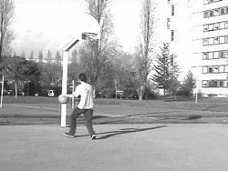

The MUSCLE Benchmarking Initiative
by Allan Hanbury and Michael Nölle
Evaluating the performance of multimedia retrieval algorithms is part of the MUSCLE, a EU Network of Excellence administrated by ERCIM.
The MUSCLE Network of Excellence aims at fostering close collaboration between research groups in multimedia data-mining and machine learning. Around 40 research groups are involved in the MUSCLE network, which has been in existence since March 2004.
The network aims at achieving two grand challenges in the area of multimedia learning: natural high-level interaction with multimedia databases and interpreting human behaviour in videos. In order to measure the progress towards achieving these challenges, a benchmarking initiative has been started within MUSCLE. The activities taking place within this benchmarking initiative are also open to research groups not directly involved in MUSCLE.
A very important component of a benchmarking initiative is test data. A repository for such data has been set up within MUSCLE (see link below). Most of the data in this repository is publicly available, while some is restricted to use by members of MUSCLE. The publicly available data includes: video sequences of artificially generated humans in natural scenes for evaluating motion detection and tracking algorithms; videos of different human gestures and videos of various types of basketball shot for evaluating human behaviour interpretation algorithms. A collection of 10 000 images of coins for evaluating classification algorithms and content based image retrieval approaches is also available. This Coin Image Seibersdorf database (CIS) is a result of the changeover from 12 European currencies to the Euro. After the changeover, large volumes of mixed coin collections had to be returned properly sorted to the national banks of the originating countries. The database consists of roughly 2000 patterns (classes) of coins from many different countries. Additionally, there are 100 000 coin images collected during an automatic sorting process carried out at the ARC Seibersdorf research GmbH, which will later serve as test and benchmarking data. A carefully generated and manually verified ground truth accompanies the data. This makes the CIS database and benchmark definition ideally suited to a large scale evaluation of classification or object recognition algorithms.
All researchers in the multimedia information retrieval field are encouraged to contribute useful benchmarking data or software to this repository. This is particularly encouraged if results obtained by using this data have been published, as this allows other researchers to evaluate their algorithms on the same data. Furthermore, any ground truth or annotation for the data collections can also be contributed.
 |
 |
| Figure 1: Image from the CIS database (provided by ARC Seibersdorf Research GmbH). |
Figure 2: Image from the basketball shots database (provided by INRIA-Vista). |
|
Apart from making benchmarking data available, a number of benchmarking campaigns are being organised. These campaigns are open to all groups doing research in multimedia retrieval. The first campaign is the MUSCLE coin classification competition. This is an educational initiative aimed at encouraging senior students interested in pattern recognition and machine learning. Participants in the competition will submit code implementing algorithms for classifying the coin database currently available on the benchmarking webpage. These algorithms will be tested on a part of the database which has not yet been made public, and the author of the best performing algorithm will receive a prize sponsored by MUSCLE. The call for participation in this competition will appear on the MUSCLE benchmarking webpage in autumn 2005.
|
| Figure 3: Image from the motion detection database (provided by Advanced Computer Vision GmbH - ACV). The image containing a computer-generated human is shown on the left, and the ground truth image (actual position of the human) is shown on the right. |
|
An evaluation campaign aimed at benchmarking image retrieval is planned for 2006 in collaboration with the CLEF image retrieval track (ImageCLEF). The first step in this collaboration is a workshop that will be held on the 20th of September 2005 in Vienna, in conjunction with the CLEF workshop and the ECDL 2005 (European Conference on Digital Libraries). The workshop is aimed at stimulating discussion on the current state of image retrieval evaluation (with well-known researchers in this field) as well as planning the 2006 evaluation campaign. More information is available on the MUSCLE benchmarking webpage.
An evaluation campaign linked to MUSCLE is ImagEVAL, funded by the French Ministry of Research. This campaign consists of the following five tasks related to image retrieval: recognition of transformed images (rotation, translation, scaling, etc.); search for photographs illustrating a text using text and image analysis; extraction and recognition of text areas in an image; object detection; and automatic image classification (night/day, indoor/ outdoor, city/nature, etc.).
Participation in these campaigns is encouraged as it will lead to an objective evaluation of the current state-of-the-art in the multimedia information retrieval research area. As the best results of these campaigns will be publicised, the groups having submitted the best-performing algorithms can benefit from the publicity.
Links:
MUSCLE NoE website: http://www.muscle-noe.org
MUSCLE benchmarking page: http://muscle.prip.tuwien.ac.at
Cross-Language Evaluation Forum (CLEF): http://www.clef-campaign.org/
ImageCLEF: http://ir.shef.ac.uk/imageclef
ImagEVAL competition: http://www.imageval.org
European Conference on Digital Libraries 2005 (ECDL): http://www.ecdl2005.org
Please contact:
Allan Hanbury, Technical University Vienna, PRIP, Austria
Tel: +43 1 58801 18359
E-mail: hanburyprip.tuwien.ac.at
Michael Nölle, Quantumtechnology, ARC Seibersdorf Research, Austria
E-mail: Michael.noellearcs.ac.at
|